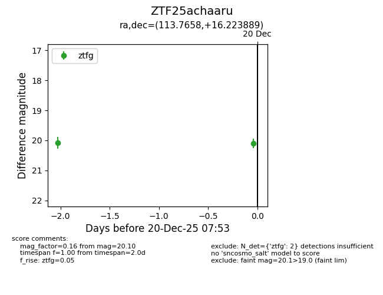
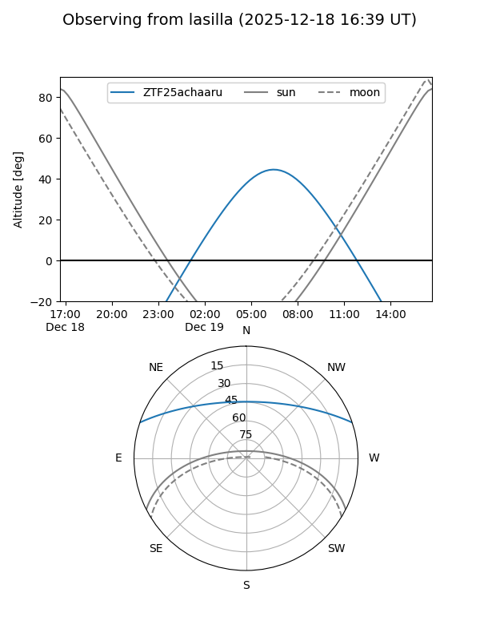
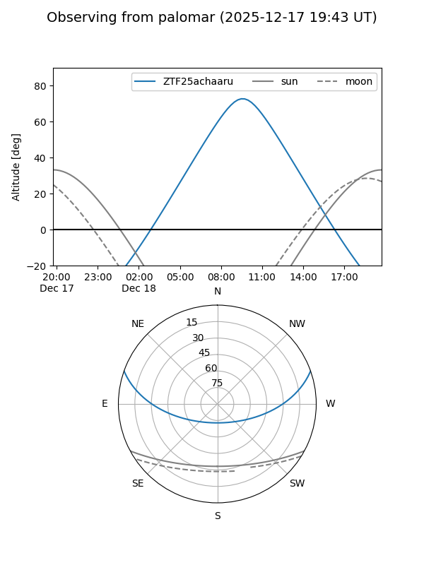
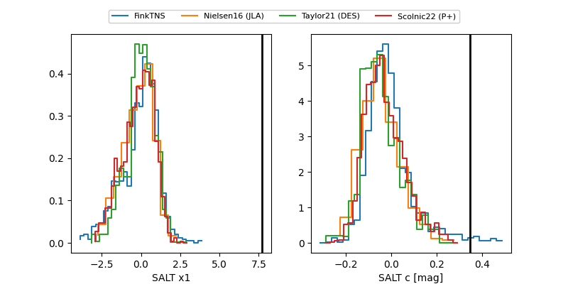

ZTF25achaaru
Target ZTF25achaaru at 2025-12-20 11:39
Aliases and brokers:
FINK: fink-portal.org/ZTF25achaaru
Lasair: lasair-ztf.lsst.ac.uk/objects/ZTF25achaaru
ALeRCE: alerce.online/object/ZTF25achaaru
alt names
ZTF25achaaru (ztf,fink_ztf)
Coordinates:
equatorial (ra, dec) = 113.7658,+16.22389
equatorial (HMS+DMS) = 07:35:03.80,+16:13:26.00
galactic (l, b) = (202.9573,+16.80299)
Flags:
Photometry:
last ztfg=20.10, ztfr=19.66
2 ztfg, 1 ztfr detections
Lightcurve

Visibility


Additional plots
